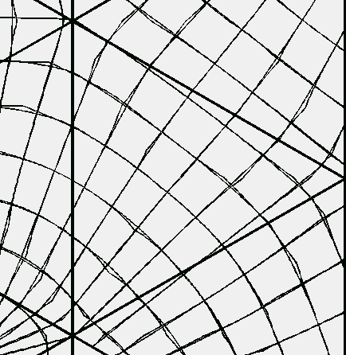
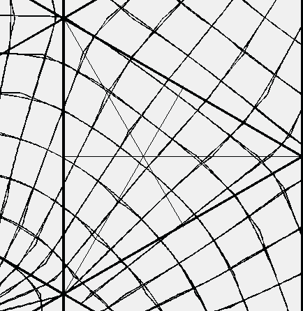
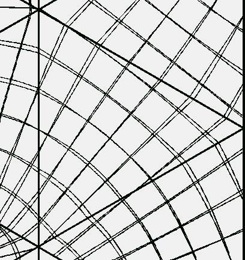

Fuller often wrote about the visual appearance of his world map. If I am not mistaken, he wrote that he asked several people to look at his map and to tell him which of the land masses displayed were too big or too small based on the appearance of the land masses on a globe. He reports that they were unable to accurately do this. Therefore, Fuller concluded that his map was visually very accurate. (If anyone can find this in one of his books, please send me the reference so I can include it here.)
After doing the exact transformation equations and the area distortion analysis for Fuller's icosahedron based world map, I decided to do a visual comparison of Fuller's world map. The purpose of this comparison was, in part, to determine if the great success of Fuller's map in displaying all the world's land masses as whole islands in one world ocean without obvious visual distortion in the shape and relative sizes of the land masses is a result of Fuller's projection method or "simply" the result of the orientation of the icosahedron. (I write "simply" but I am sure there was nothing simple about determining this orientation of the icosahedron.)
To do this, I generated many world map images using Fuller's projection method as well as two other world projection methods onto an icosahedron. These other methods are known as Snyder's equal area projection and the Gnomonic projection methods. Since all three projection methods "project" the world onto an icosahedron, and because I was interested in determining if there is any obvious visual difference between the three results, the orientation of the icosahedron was the same for all three maps (the orientation used by Fuller). I then had several people visually compared the resulting images to determine if they could correctly determine which images were generated by Fuller's method as opposed to either of the other two methods.
The result was that images that did not include the longitude latitude grid could not be distinguished from Fuller's world map. That is, the Snyder and Gnomonic projection methods resulted in visually indistinguishable world maps to that of Fuller's projection method. When the longitude latitude grids were included in the images, it was possible to distinguish between the three maps.
Here is a triangle from the icosahedron world map using both the Fuller and Snyder projection methods. The longitude and latitude grids are overlaid.
As you can see Snyder's projection method results in little cusps as some of the lines cross the symmetry lines of the triangle (these symmetry lines I include in the next image.)
Here is a triangle from the icosahedron world map using both the Fuller and Gnomonic projection methods. The longitude and latitude grids are overlaid.
In my visual study the images were all printed on 8.5x11.0 inch paper. It could be that at this size there is not an obvious visual difference but at some other size the difference would be visually obvious. (I doubt that this would be the case, but maybe.) Also, it should be noted that there is a mathematical difference. And it should be noted that there is a difference in the three map's area distortions. Snyder's map has no area (size, not shape) distortion because it is an equal area projection. I look at this result as indicating just how good Fuller's projection method really is. To have Fuller's result to be visually indistinguishable to an equal-area projection plus having the advantage of all its icosahedron's edges undistorted in length measurements (to the scale of the map), is really remarkable to me.
On the other hand, because Fuller's world map image is indistinguishable to the world map image created by the Gnomonic projection method indicates that it is the use of the icosahedron, and not the projection method, that seems to be the critical point here. Because of the mathematical differences in the projection methods, it may be advantageous to use the Gnomonic projection method with Fuller's icosahedron orientation rather than Fuller's projection method. For example, the Gnomonic projection method has an exact inverse whereas Fuller's method doesn't (yet). (It might be possible to derive one for Fuller's projection method. I haven't found one yet.) This means that in computer applications where you "click" on a position on the flat map to get an (x,y) coordinate pair, and you have to convert this to the corresponding (longitude, latitude) coordinate pair, you would have to "loop through" Fuller's projection method several times to get an approximate answer whereas in the Gnomonic case, there is no looping, you have an exact "inverse" equation. So a lot of time might be saved calculating (longitude, latitude) coordinates from (x, y) coordinates by using the Gnomonic method. Each application of a world map will have its own requirements which will dictate which method to be used.
I had hoped to provide you with the means for obtaining a complete copy of my visual comparison but due to computer space constraints it is not possible at this time.
Usage Note: My work is copyrighted. You may use my work but you may not include my work, or parts of it, in any for-profit project without my consent.